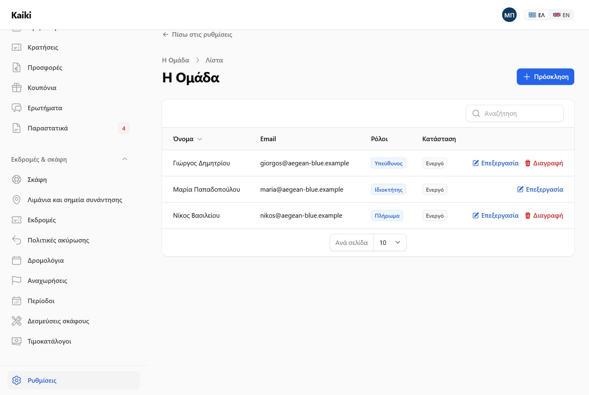

Μια μικρή επιχείρηση με σκάφη έχει σχεδόν πάντα τρία είδη ανθρώπων. Υπάρχει αυτός στον οποίο ανήκει η επιχείρηση και ο οποίος απαντά για τα χρήματα, τη σύμβαση και τον λογαριασμό. Υπάρχει αυτός που κρατά το γραφείο: απαντά στο τηλέφωνο, φτιάχνει τα δρομολόγια, βάζει τιμές, κλείνει κρατήσεις, στέλνει προσφορές. Και υπάρχει αυτός που είναι πάνω στο σκάφος: ο καπετάνιος ή ο ναύτης που το πρωί θέλει να ξέρει ποιοι έχουν κλείσει, να τους περάσει έναν έναν και να φύγει στην ώρα του.
Το Kaiki έχει ακριβώς τρεις ρόλους, έναν για κάθε έναν από αυτούς τους ανθρώπους. Δεν φτιάχνονται άλλοι και δεν παραμετροποιούνται δικαιώματα ένα ένα. Ένας χρήστης μπορεί να έχει περισσότερους από έναν ρόλους — μια μικρή επιχείρηση όπου ο ίδιος άνθρωπος κρατά το γραφείο και ταξιδεύει τις Κυριακές παίρνει και τους δύο — και τότε έχει το άθροισμα των δύο, όχι τον χαμηλότερο.
Το παράθυρο του πληρώματος στις αναχωρήσεις είναι ρυθμιζόμενο και εργοστασιακά είναι σήμερα και αύριο, μετρημένο με την ώρα της επιχείρησής σας και όχι του διακομιστή. Ένας ναύτης που ανοίγει το κινητό του στις έντεκα το βράδυ πριν από ένα πρωινό απόπλου βλέπει τη σωστή μέρα.
Κάθε γραμμή είναι μία οθόνη του πίνακα διαχείρισης στο /app. «Πλήρης» σημαίνει ότι ο ρόλος βλέπει την οθόνη και μπορεί να αλλάξει ό,τι υπάρχει πάνω της. «Μόνο ανάγνωση» σημαίνει ότι τη βλέπει αλλά δεν αλλάζει τίποτα. «Καμία» σημαίνει ότι η οθόνη δεν εμφανίζεται καν στο μενού του και ότι μια απευθείας διεύθυνση επιστρέφει άρνηση.
| Οθόνη | Ιδιοκτήτης | Υπεύθυνος | Πλήρωμα |
|---|---|---|---|
| Πίνακας ελέγχου | Πλήρης | Πλήρης | Μόνο ανάγνωση, αλλά με τα χρηματικά νούμερα ορατά — δείτε τη σημείωση παρακάτω |
| Αναχωρήσεις | Πλήρης | Πλήρης | Μόνο ανάγνωση, και μόνο σήμερα και αύριο. Μπορεί να κατεβάσει τη λίστα επιβίβασης χωρίς αριθμούς εγγράφων |
| Κρατήσεις | Πλήρης | Πλήρης | Μόνο ανάγνωση, χωρίς κανένα ποσό. Βλέπει όμως όλες τις κρατήσεις, όχι μόνο των ημερών του — δείτε τη σημείωση παρακάτω |
| Ημερολόγιο | Πλήρης | Πλήρης | Μόνο ανάγνωση, με τη λίστα επιβατών κάθε εκδρομής. Χωρίς δέσμευση σκάφους, και σε οποιαδήποτε ημερομηνία — δείτε τη σημείωση παρακάτω |
| Επιβίβαση (σάρωση ή πάτημα δίπλα στο όνομα) | Πλήρης | Πλήρης | Πλήρης |
| Λίστα επιβίβασης χωρίς σήμα | Πλήρης | Πλήρης | Πλήρης |
| Εκδρομές | Πλήρης | Πλήρης | Καμία |
| Σκάφη | Πλήρης | Πλήρης | Καμία |
| Λιμάνια και σημεία συνάντησης | Πλήρης | Πλήρης | Καμία |
| Τιμοκατάλογοι | Πλήρης | Πλήρης | Καμία |
| Περίοδοι | Πλήρης | Πλήρης | Καμία |
| Δρομολόγια | Πλήρης | Πλήρης | Καμία |
| Πολιτικές ακύρωσης | Πλήρης | Πλήρης | Καμία |
| Δεσμεύσεις σκάφους | Πλήρης | Πλήρης | Καμία |
| Κουπόνια | Πλήρης | Πλήρης | Καμία |
| Προσφορές | Πλήρης | Πλήρης | Καμία |
| Ερωτήματα | Πλήρης | Πλήρης | Καμία |
| Συχνές ερωτήσεις | Πλήρης | Πλήρης | Καμία |
| Εξαγωγές | Ζητά νέα εξαγωγή και την κατεβάζει· οι παλιές δεν αλλάζουν και δεν σβήνονται | Ζητά νέα εξαγωγή και την κατεβάζει· οι παλιές δεν αλλάζουν και δεν σβήνονται | Καμία |
| Τι πήγε στραβά | Πλήρης | Πλήρης | Καμία |
| Μηνύματα | Μόνο ανάγνωση, με δυνατότητα επαναποστολής | Μόνο ανάγνωση, με δυνατότητα επαναποστολής | Καμία |
| Ιστορικό ενεργειών | Μόνο ανάγνωση, για κανέναν αλλιώς | Μόνο ανάγνωση, για κανέναν αλλιώς | Καμία |
| Εκκρεμότητες δρομολογίων | Πλήρης | Πλήρης | Καμία |
| Επωνυμία | Πλήρης | Πλήρης | Καμία |
| Αρχική σελίδα | Πλήρης | Πλήρης | Καμία |
| Σελίδα αναζήτησης | Πλήρης | Πλήρης | Καμία |
| Το domain σας | Πλήρης | Πλήρης | Καμία |
| Συγχρονισμός ημερολογίου | Πλήρης | Πλήρης | Καμία |
| Κλειδιά API | Πλήρης | Καμία | Καμία |
| Webhooks | Πλήρης | Καμία | Καμία |
| Συνδέσεις (πληρωμές, αποστολές) | Πλήρης | Καμία | Καμία |
| Πληρωμές (προκαταβολή) | Πλήρης | Καμία | Καμία |
| Ρυθμίσεις (η σελίδα με τις κάρτες) | Όλες οι κάρτες | Όλες, εκτός από «Συνδέσεις» και «Πληρωμές» | Καμία — δεν εμφανίζεται καν στο μενού |
Η σελίδα Ρυθμίσεις, κάτω κάτω στο αριστερό μενού, δείχνει σε κάθε ρόλο μόνο τις κάρτες των οθονών που μπορεί να ανοίξει — ρωτά την κάθε οθόνη, δεν κρατά δική της λίστα. Όποιος δεν μπορεί να ανοίξει καμία, δεν βλέπει ούτε το κουμπί.
Δύο πράγματα δεν σβήνονται από κανέναν ρόλο, ούτε από τον ιδιοκτήτη: το ιστορικό ενεργειών και το αρχείο των μηνυμάτων που στάλθηκαν. Ένα ιστορικό που μπορεί να καθαριστεί από μέσα δεν είναι ιστορικό.
Όταν η συνδρομή σας μείνει απλήρωτη, ο λογαριασμός περνά σε κατάσταση μόνο ανάγνωσης. Τότε όλες οι στήλες του παραπάνω πίνακα γίνονται προσωρινά «μόνο ανάγνωση», με ένα μήνυμα που εξηγεί τι συνέβη. Οι σελίδες των πελατών σας και τα εισιτήρια που έχουν ήδη στα χέρια τους δεν επηρεάζονται.
Τρία πράγματα λείπουν σκόπιμα από κάθε οθόνη που ανοίγει ένα μέλος του πληρώματος.
Ο λόγος δεν είναι η εμπιστοσύνη. Είναι το ίδιο το κινητό. Η οθόνη επιβίβασης δουλεύει πάνω στο σκάφος, με το τηλέφωνο να περνά από χέρι σε χέρι, ξεκλείδωτο, στον ήλιο, μπροστά σε τρίτους — και συχνά συνεχίζει να δουλεύει χωρίς σήμα, δηλαδή με στοιχεία αποθηκευμένα στη συσκευή. Ένας αριθμός διαβατηρίου σε τέτοια οθόνη είναι προσωπικό δεδομένο ειδικής προσοχής που ταξιδεύει σε συσκευή την οποία δεν ελέγχετε. Το ίδιο σκεπτικό ισχύει και για το γιατί ο αριθμός εγγράφου φυλάσσεται κρυπτογραφημένος και διαγράφεται μετά το προβλεπόμενο διάστημα διατήρησης.
Πρακτικά: αν ο καπετάνιος σας σας πει ότι δεν βλέπει το σύνολο μιας κράτησης, δεν πρόκειται για βλάβη και δεν χρειάζεται να του δώσετε άλλον ρόλο. Αν χρειάζεται πραγματικά να εισπράττει, ο ρόλος που το επιτρέπει είναι ο Υπεύθυνος — και τότε βλέπει και όλα τα υπόλοιπα οικονομικά στοιχεία.
Δύο στοιχεία επικοινωνίας που ίσως δεν περιμένετε είναι ορατά στο πλήρωμα: το τηλέφωνο και το email του πελάτη, στην καρτέλα της κράτησης. Υπάρχουν εκεί επειδή ένα μέλος του πληρώματος πρέπει να μπορεί να πάρει τηλέφωνο κάποιον που άργησε.
Σε τρία σημεία η σημερινή έκδοση είναι πιο ανοιχτή από όσο περιγράφει ο κανόνας «το πλήρωμα βλέπει μόνο τις αναχωρήσεις των ημερών του». Καταγράφονται εδώ γιατί ένας εργοδότης πρέπει να ξέρει τι δίνει, όχι τι υποτίθεται ότι δίνει.
Αν αυτό δεν σας βολεύει για μια εποχική πρόσληψη, ο ασφαλής τρόπος είναι να δίνετε τον λογαριασμό πληρώματος όσο διαρκεί η συνεργασία και να τον απενεργοποιείτε αμέσως μετά.
Μόνο ο ιδιοκτήτης μπορεί να προσθέσει άνθρωπο ή να αλλάξει ρόλο. Ο υπεύθυνος τρέχει την επιχείρηση αλλά δεν αποφασίζει ποιος μπαίνει σε αυτήν — αλλιώς θα μπορούσε να δώσει στον εαυτό του περισσότερα από όσα έχει. Κάθε χρήστης μπορεί πάντα να αλλάξει τα δικά του στοιχεία: όνομα, γλώσσα, κωδικό.
Ο τελευταίος ιδιοκτήτης ενός λογαριασμού δεν μπορεί να χάσει τον ρόλο του, και κανείς δεν μπορεί να διαγράψει τον ίδιο του τον λογαριασμό από τον πίνακα. Και τα δύο είναι σκόπιμα: είναι οι δύο κινήσεις που κλειδώνουν οριστικά μια επιχείρηση έξω από τα δεδομένα της.
Η οθόνη βρίσκεται στις Ρυθμίσεις (κάτω κάτω στο αριστερό μενού) → κάρτα Ομάδα. Δείχνει ποιος έχει πρόσβαση, με ποιον ρόλο, και αν έχει μπει έστω μία φορά — μια πρόσκληση που δεν άνοιξε ποτέ μοιάζει με κανονικό λογαριασμό σε κάθε άλλη στήλη, και το καταλαβαίνετε το πρωί που ο άνθρωπος δεν μπορεί να συνδεθεί.

Δεν υπάρχει πεδίο κωδικού σε αυτή την οθόνη, ούτε για εσάς. Ένας κωδικός που πληκτρολογεί ο ένας και λέει στον άλλον στο τηλέφωνο μένει σε ένα chat, σε ένα τετράδιο και στη μνήμη κάποιου που κάποτε θα φύγει. Αν κάποιος χάσει τον δικό του, υπάρχει «ξέχασα τον κωδικό μου» στη σελίδα σύνδεσης.
Εκτός από τον πίνακα της επιχείρησής σας υπάρχει και μια ξεχωριστή κονσόλα, στη διεύθυνση /admin, για τον διαχειριστή της ίδιας της πλατφόρμας Kaiki. Δεν είναι υπάλληλος καμίας επιχείρησης με σκάφη.
Κανένας ρόλος επιχείρησης δεν έχει πρόσβαση εκεί, σε καμία περίπτωση. Ούτε ο ιδιοκτήτης. Ο έλεγχος γίνεται στη σύνδεση: ένας λογαριασμός ανήκει είτε σε μια επιχείρηση είτε στην πλατφόρμα, ποτέ και στα δύο, και η προσπάθεια εισόδου στον λάθος πίνακα απορρίπτεται. Το αντίστροφο ισχύει επίσης: ο διαχειριστής της πλατφόρμας δεν μπορεί να συνδεθεί στο /app καμιάς επιχείρησης.
Τι βλέπει ο διαχειριστής της πλατφόρμας:
Τι μπορεί να κάνει: να ανοίξει νέα επιχείρηση — ο ιδιοκτήτης της παίρνει πρόσκληση και ορίζει μόνος του κωδικό — και να αλλάξει σε μια υπάρχουσα το πακέτο, την κατάσταση, τη λήξη της πρόσβασης, αν είναι δοκιμαστικός λογαριασμός, τον κλάδο, και τις λειτουργίες: σήμερα μία, την επιβίβαση με QR. Κάθε αλλαγή ζητά αιτιολογία πριν αποθηκευτεί και γράφεται στο δικό σας ιστορικό ενεργειών, με το όνομά του και μόνο ό,τι άλλαξε.
Τι δεν βλέπει, και αυτό είναι το σημαντικό: κανένα δεδομένο πελάτη σας. Καμία κράτηση, κανένα όνομα επιβάτη, κανένα τηλέφωνο, κανένα ποσό, καμία λίστα επιβίβασης. Δεν πρόκειται για επιλογή σχεδίασης της οθόνης αλλά για δύο ανεξάρτητα κλειδώματα: ο λογαριασμός πλατφόρμας δεν κατέχει κανένα από τα δικαιώματα των τριών ρόλων, και κάθε ερώτημα σε δεδομένα επιχείρησης φιλτράρεται αυτόματα ως προς την επιχείρηση που έχει αναγνωριστεί από το αίτημα — που για την κονσόλα της πλατφόρμας δεν είναι καμία.
Ούτε μπορεί να αλλάξει τα δικά σας στοιχεία — επωνυμία, ΑΦΜ, διεύθυνση, χρώματα — ούτε να διαγράψει τον λογαριασμό σας· αυτά τα αλλάζετε μόνο εσείς. Η μελλοντική δυνατότητα ενός τεχνικού να μπει προσωρινά στον πίνακα σας για να σας βοηθήσει θα είναι χρονικά περιορισμένη, θα καταγράφεται στο ιστορικό ενεργειών με το ονοματεπώνυμό του και θα εμφανίζει μόνιμη προειδοποιητική μπάρα στην οθόνη· σήμερα δεν υπάρχει καθόλου.